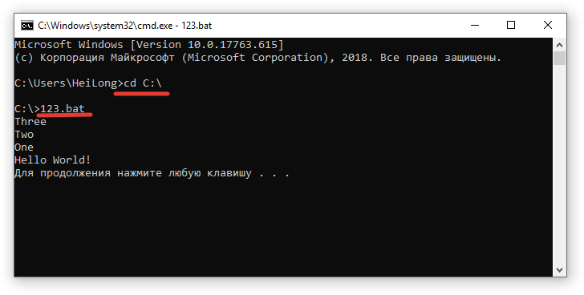
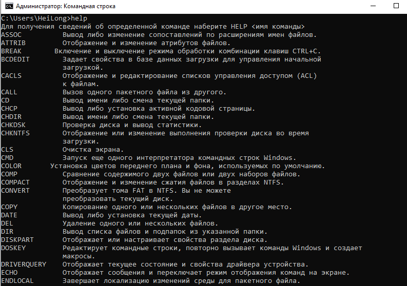
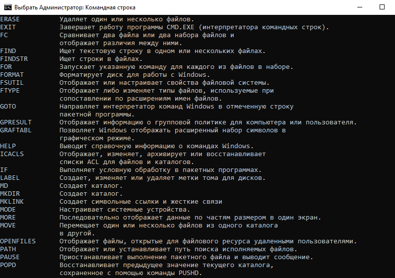
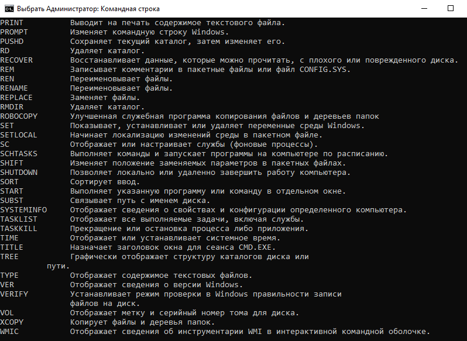

Конспект электронного хакактера, содержащий материалы для обучения написанию батников. Страница обновляется по мере изучения материала, версии сохраняться не будут. Интерфейс забран у предыдущего проекта, ибо показался более привлекательным.
База конспектов.Оглавление.
- Как сделать первый батник.
- Переменные, ввод-вывод.
- Некие простые конструкции.
- Интерфейс и внешние эффекты.
- Основы работы в системе.
- 123
- 123
- 123
- 123
- 123
- В конец документа.
Глава 1. Первый батник.
Файл с расширением bat или cmd открывается через оболочку командной строки. Редактируется любым текстовым редактором. Содержит команды, которые влияют на происходящее в операционной системе.
Создадим в корневом каталоге С:\ файл 123.bat и напишем следующий текст:
@rem My First Batch file!
@echo off
echo Three
echo Two
echo One
echo Hello World!
pause
Запустим полученный файл и увидим окно с результатом. Также можно запустить файл из командной строки. Нажмём комбинацию Win + R, вводим cmd и подтверждаем. Затем выбираем директорию, и набираем имя файла.
Rem комментарий. Срока игнорируется компиляторами. Echo off выключает режим отображения выполняемых команд перед результатом их выполнения. echo выводит текст на экран. pause останавливает программу до действия пользователя.
Глава 2. Переменные, ввод-вывод.
Переменные задаются через команду set. По умолчанию это будет строковая переменная, записавшая все символы до конца строки после знака =, включая пробелы, а перед ним не должно быть пробела, у меня из-за него случился долгий поиск причины глюков. Чтобы принять число, нужно использовать set /A. Вызвать переменную можно, заключив её в знаки %.
@echo off
set name1=Ivan
set /A age1 = 20 + 5
set info1=%name1% Ivanov, %age1% years old.
echo %info1%
pause
Второй вид переменных Arguments variable передаётся в файл. Вероятно, это работает только из командной строки или прочих текстовых консолей. Всего таких пеерменных в одном батнике может быть только десять. Вызов через %0 -- %9. %0 содержит имя файла с директорией в случае указания её. Например, если вызвать 123.bat failik, то %0 будет содержать 123.bat, или же если открыть файл из файловой среды ОС, то C:/123.bat, а %1 будет строкой failik. Если вывод %1 присутствует, но не передан в файл, то отображается информация об использовании echo off. Вероятно, тут есть правило генерации переменных, узнаю позже.
Команда SHIFT сдвигает переменные к нулю, то бишь нулевая переменная утрачивается окончательно, а первая записывается в нулевую, и подобно этому со следующими.
chcp 1251 позволяет использовать кириллицу в командах вывода или переменных. Вызывает строку с указанием применённой кодировки, но почему-то не работает пока у меня, хотя уведомления русские. 65001 кодировка помогла, но язык уведомлений интерфейса стал наоборот английским.
Ввод строковой переменной set /p var1=, затем вывод echo %var1%.
Переменые, созданные в батнике во время сессии запущенной комендной строки, остаются доступными для других батников. Например, при совпадении имён? Надо проверить. Однако, если назначить блок программы между строчками setlocal и endlocal, все созданные там переменные не будут существовать вне блока. Для оптимизации памяти.
Глава 3. Некие простые конструкции.
Пример использования If и Goto.
@echo off
echo press 1 or 2
set /p option=
if '%option%'=='1' goto :label1
if '%option%'=='2' start 123.jpg
:label1
echo hi its label1
pause
Предлагает нажать 1 или 2. Вводим строковую переменную. Сравниваем её логически с символом 1 или 2, и в первом случае goto переводит на метку с соответствующим именем. Вариант 2 открывает картинку, но после этого также перейдёт к действиям после метки. Несовершенная конструкция.
Глава 4. Интерфейс и внешние эффекты.
Msg * Текст выводит уведомление в ОС с указанным текстом в небольшом окне.
cls очищает экран командной строки.
start путь файла или файл в директории -- запускает файл в стандартном приложении.
Переменные среды системы позволяют добавлять некоторые общие переменные для командной строки.
Глава 5. Работа в системе.


Условный опера
if a>b
then writeln(a,' большее из них.')
else writeln(a,' не большее из них. могут быть равны.');

Глава 6. Циклы.
for x:=1 to 50 do
begin
write (x,' ')
end;
for x:=50 downto 1 do
begin
write (x,' ')
end;
Здесь переменная х выступает в роли счетчика цикла. Счетчик может быть только порядкового типа. То бишь он определит своё прошлое и следующее значение. Вещественные числа не подходят определённо. Символьные и булевские подойдут, но используются редко, куда удобнее целочисленные. Телом цикла может быть оператор простой либо составной. Нельзя переопределить значение счетчика, чтобы повлиять на ход цикла, но можно использовать для определения других переменных. По окончании счетчик автоматически прибавит единицу. Тело цикла будет совершено в последний раз, когда счетчик равен конечному значению.
repeat {тело} until {условие};
Тело может быть одним или несколькими операторами. begin end использовать здесь не обязательно. Цикл будет произведён минимум один раз, затем будет постпроверка условия. В случае истинности цикл будет завершён.
while {условие} do {тело};
Проверка выполняется вначале. Если условие ложно, цикл не будет выполнен. Если истинно, то будет выполняться. Тело включает простой или составной оператор. Ещё одна задачка для ума. Любое введенное число нужно разложить на простые множители. Простые - делятся только на себя и на единицу. Любое сложное число можно выразить произведением простых. Примерный алгоритм для числа 100.
100/2=50. делится нацело на 2 - первый множитель.
50/2=25.
25/2♦25/3♦25/4♦25/5=5. делить на 4 глупо, потому что 25 тогда разделилось бы и на 2. Но иначе никак.
5/2♦5/3♦5/4♦5/5=1.

Нет времени объяснять. Программа работает, и то ладно. Вникать в мелочи долго.
Глава 7. Генератор псевдослучайностей.
Команда randomize; инициализирует генератор. Функция random(X) возвращает любое число в интервале 0..Х-1. Например, n:=random(10) присвоит n значение 0..9. Разрешена такая примочка - n:=(random(10)+1); Глава короткая, но интересная. Этот псевдогенератор не идеален, поэтому стоит поискать расширенные способы.
Глава 8. Символы, строки.
American standard code for information interchange, ASCII. В текстовом редакторе компилятора видны не все символы. Но основные объяснить можно. Во многих стандартных редакторах можно написать символ, удерживая alt и набирая код. Есть специфичные символы вроде 10 - он не отображается, но обозначает перевод строки. Суть символа в том, чтобы графически отображать информацию. Для других операций символы бесполезны. Всего в таблице их 255. Нулевой и 256-й не выводятся. При продолжении нумерации будет простой повтор.

Переменные символы, точнее символьные переменные, в разделе объявления имеют тип char. Символьные константы указываются в 'таких скобках'. ch:='5'; Предыдущая запись гласит, что переменная ch получила значение 5, вот только эта пятёрка не будет полезной для арифметических операций - она символ.
Символьные константы можно сравнивать. При этом будет использован ASCII-код.
x:char; x:=chr(170); x='к'. Это функция chr(), она из кода возвращает символ.
x:integer; x:=ord('к'); x=170. Это функция ord(), она из символа возвращает код.
Строковые переменные объявляются s:string[X]; Х является ограничением количества символов, и не является обязательным пунктом переменной, по умолчанию имеющей максимальную длину 255 символов. Присваивание такое - str:='слово'; Сложение строковых переменных подобно числовым - последовательное соединение. Складывать строковые переменные со строковыми константами также возможно, используя известные скобки.
Х[5] представляет собой обращение к пятому символу в строковой переменной. chr01:=strk[1];
| chr(x) | возвращает символ из номера |
| ord(ch) | возвращает номериз символа |
| length(s) | возвращает длину строковой переменной |
| copy(s,n,l) | из строки S копирует L символов, начиная с N |
| delete(s,n,l) | из строки S удаляет L символов, начиная с N |
| readkey | считывает нажатый символ |
| keypressed | определяет факт нажатия. неуместно, но пусть тут. |
Глава 9. Массивы.
X: array[1..10] of integer;
1..10 - границы массива. Допускается для границ использовать любые порядковые значения, даже символьные. Нижняя позиция должна быть меньше верхней. На одну переменную есть ограничение памяти 64 КБ - учесть для объёмных массивов. Элементы массива могут быть символьными или булевскими, при должном типе.
При вдумчивом изучении натолкнулся на бред. x:array['b'..'f'] of char=('2','4','Z','8','0');
Отсюда следует, что x['d']=Z. По сути логично, но зачем... При заведении цикла счётчик приходится делать символом. Путает только. Символьная константа играет роль элемента массива, который может равняться любому другому значению другого типа.
Назначение при объявлении. str:array[1..3] of string=('кто','где','как');
Wm: array[1..5,1..5] of integer; Это двумерный массив. 5х5, вроде таблицы. Ниже примерный и бесполезный код использования двумерного массива.

Довольно ёмкий материал - сортировка массивов. Ради забавы попробовал сам смастерить - но только сломал мозг.

Разобраться с этим можно позднее. Изучить и понять.
Есть ещё способы сортировки по невозрастающему убыванию вверх, и в другие стороны.. И ещё много применений для двумерных массивов. Раздел будет дополняться при необходимости.
Глава 10. Процедуры и функции.
Всё просто. Скриншот с кодом, и разъяснение.

Функции объявляются в соответствующем разделе. Имеют имя, тип своего значения, формальные параметры. Собственные разделы, переменные и тело функции. Переменные и константы, указанные в функции, используются только в ней, поэтому имена можно дублировать с внешними. Друг на друга они не влияют. За исключением формальных параметров функции - они тоже могут взять имя, использованное во внешнем теле, а значение они принимают именно из фактических параметров при обращении к функции.
На конкретном коде - переменной х мы хотим придать значение операций, проведённых с ней. Вызываем функцию с этими операциями, сообщив параметр х. Значение фактического параметра х передаётся формальному параметру а внутри функции (можно было формальный параметр тоже назвать х). Внутри функции есть переменная z. Производятся необходимые операции, ввод-вывод, устойчивая часть программы. Обязательным условием является присвоение функции некоторого значения -- оно и будет возвращено вызывающей переменной, здесь результатом мы увидим 50. Существуют и нулевые функции, без формальных параметров и возврата значения, но условие нужно соблюсти - хотя бы присвоить функции значение 0. Вызвать функцию простым названием (fucsia), увидеть её работу и двигаться дальше.
Процедуры. Несколько стандартных.
| delay(ms) | задержка времени милисекунды |
| exit | завершает текущую структуру |
| halt | завершает работу приложения |
| gotoxy(x,y) | перевод курсора в Х,У |
| str(x,s) | перевод числа в строку |
| val(s,x,n) | перевод строки в число. n=0, либо порядок символа, вызвавшего сбой |
Пользовательские процедуры немного сложнее в плане количества особенностей.

При имени процедуры указываются формальные параметры. И даже тут они делятся на два типа. Первый -- параметр-значение (a,b). Они принимают значение фактического параметра, константу, выражение. Если соотвествует переменная, в ходе работы процедуры она во внешней структуре не изменится, изменения останутся внутри процедуры, даже если имена переменных будут одинаковыми. Второй тип в этом отличается. Параметр-переменная (c) принимает адрес фактической переменной в памяти, и изменения коснутся её. То бишь, при вызове функции соответствующий фактический параметр должен быть только переменной. Естественно, всегда нужно учитывать количество и порядок фактических параметров при вызове. В процедуре можно использовать переменные локальные (m,n) и глобальные (abc). Локальные могут именами совпадать с переменными во внешней программе, но значения у них сохранятся внутри своих структур раздельно. Глобальные переменные описаны во внешней структуре, и изменятся при операциях с ними внутри процедуры.
Если во внешней системе были переменные a,b,m,n, то после выполнения процедуры они останутся прежними. Вывести их в процедуре -- увидим локальные значения. Вывести во внешней -- увидим предыдущие. Но если они переданы в параметр-переменную (c), или не описаны как локальные, то будут изменены глобально.

Процедуры и функции могут вызывать себя и себе подобных изнутри. А ещё они могут вызывать самих себя. Довольно трудно найти проблему, решение которой будет затрагивать этот способ, но это реально. Выше -- пример, программа вычисляет вещественное a в целой положительной степени n. Задействована рекурсия - обращение к самой себе. При желании можно попробовать проанализировать ход действия программы.
Вторая часть.
В начало документа.